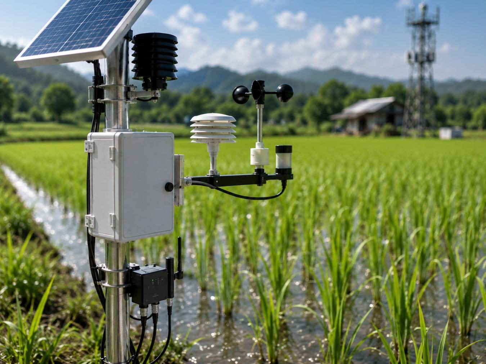
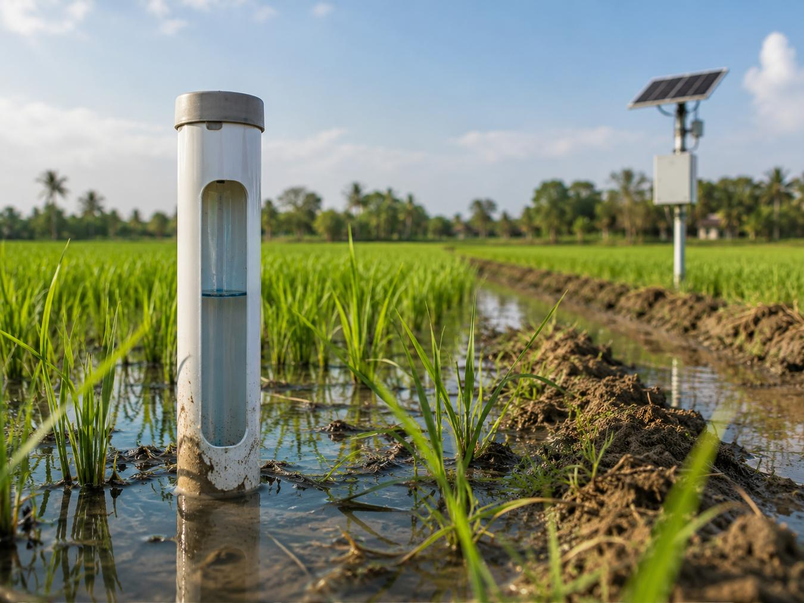
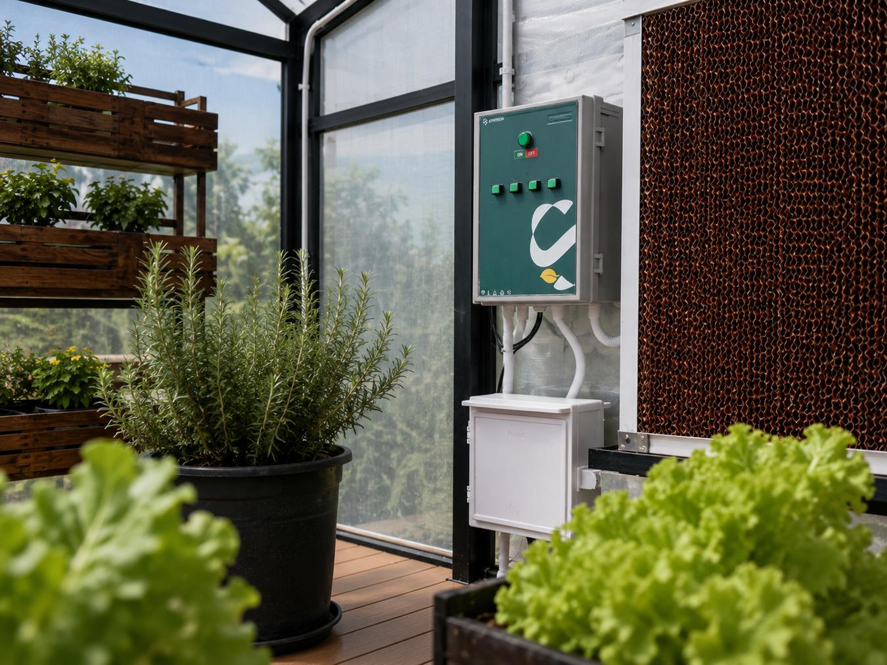
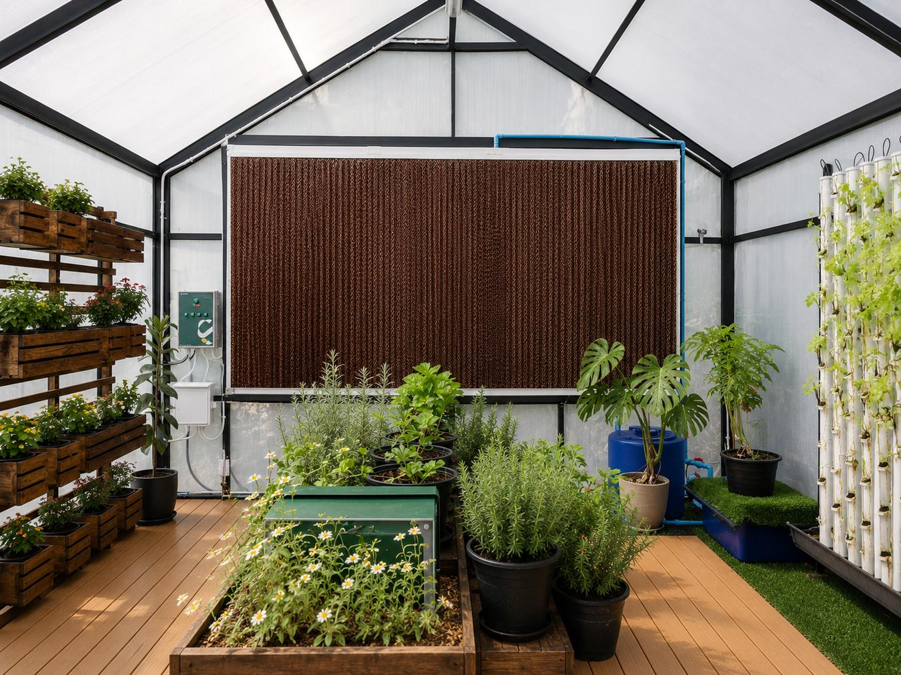
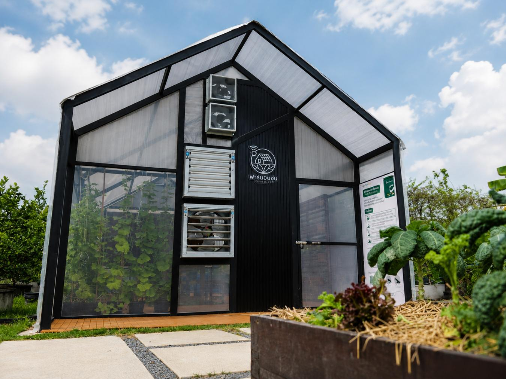
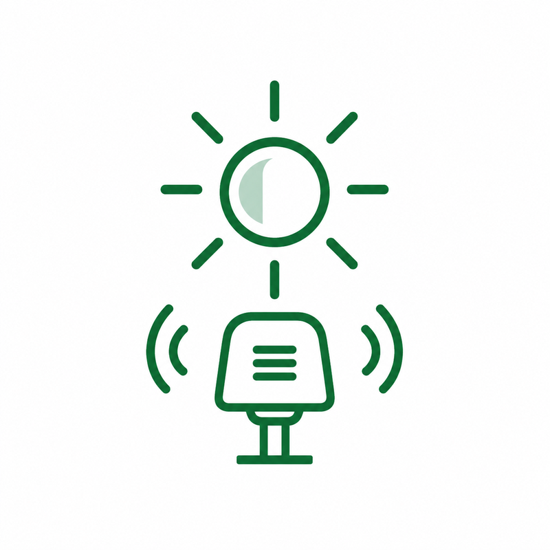
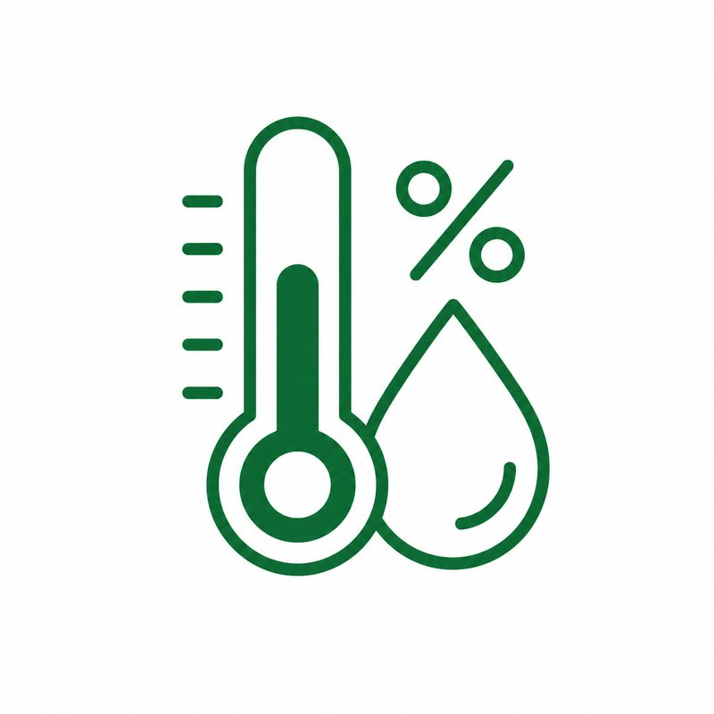
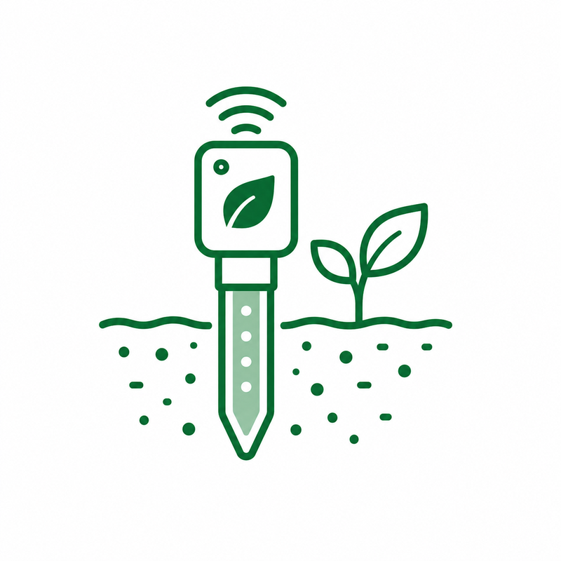
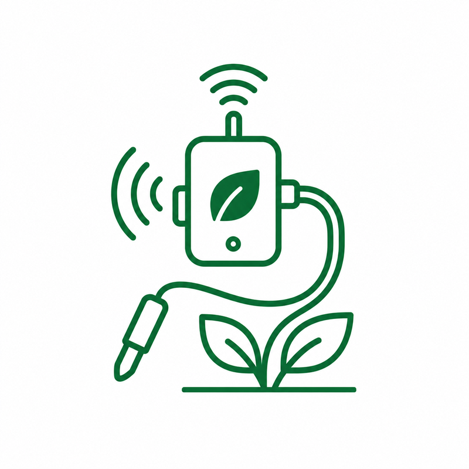

เทคโนโลยีเกษตรอัจฉริยะ
และคาร์บอนเครดิต
Smart Agriculture
& Carbon Credit
ยกระดับการทำเกษตรแม่นยำสูง (Precision Agriculture) ด้วยเครือข่าย Sensor ไร้สายพลังงานแสงอาทิตย์ และการจัดเก็บข้อมูลระดับคาร์บอนเครดิตที่โปร่งใสและตรวจสอบได้จริง Precision agriculture built on solar-powered wireless sensor networks, with carbon-grade field data that is transparent and auditable.
ปัญหาที่เราช่วยคุณแก้ไขChallenges We Help You Solve
เข้าใจปัญหาที่แท้จริงของเกษตรกร เราพร้อมช่วยให้คุณทำการเกษตรได้อย่างมีประสิทธิภาพและยั่งยืนWe understand the real challenges farmers face, and deliver solutions for smarter, more sustainable farming.
ผลผลิตไม่สม่ำเสมอUnpredictable Crop Yields
ผลผลิตได้รับผลกระทบจากสภาพอากาศและสภาพแวดล้อมที่ควบคุมได้ยากCrop yields are affected by weather and environmental conditions.
ใช้น้ำและทรัพยากรเกินความจำเป็นInefficient Resource Usage
การให้น้ำ ปุ๋ย และทรัพยากรต่างๆ ขาดข้อมูลที่แม่นยำ ทำให้ต้นทุนสูงExcessive use of water, fertilizers, and resources increases costs.
มองไม่เห็นข้อมูลภาคสนามแบบ Real-timeLimited Field Visibility
ไม่สามารถติดตามสภาพแปลงและพืชผลได้แบบทันทีLack of real-time field data makes timely decisions difficult.
บริหารหลายแปลงหรือหลายพื้นที่ได้ยากComplex Multi-site Management
ข้อมูลแต่ละพื้นที่แยกกัน ทำให้การบริหารจัดการไม่มีประสิทธิภาพManaging multiple farms or plots is inefficient and time-consuming.
พบปัญหาล่าช้าDelayed Issue Detection
ตรวจพบโรคพืช ศัตรูพืช หรืออุปกรณ์ขัดข้องไม่ทันเวลาPests, diseases, or equipment issues are detected too late to prevent damage.
ตัดสินใจจากประสบการณ์มากกว่าข้อมูลLimited Data-Driven Decisions
ขาดข้อมูลที่เชื่อถือได้ในการวางแผนและตัดสินใจFarming decisions rely on experience instead of accurate data.
ก้าวสู่ระบบเกษตรกรรมแม่นยำสูง
จากแนวคิดสู่การใช้งานจริง
Precision Agriculture
From Concept to Working Farm
โซลูชัน Smart Agriculture (AIoT LPWAN) ของเรา เปลี่ยนกระบวนการทางการเกษตรดั้งเดิมให้เป็นดิจิทัลอย่างแท้จริง ด้วย Sensor วิเคราะห์พื้นที่เพาะปลูกแบบเจาะลึกเฉพาะตำแหน่ง Our Smart Agriculture (AIoT LPWAN) solution digitises traditional farming end to end, using sensors that analyse each plot position by position.
ระบบทำงานผ่านเครือข่ายไร้สายระยะไกลที่ใช้พลังงานต่ำ ส่งข้อมูลสภาพอากาศ (Micro Weather Station) ระดับน้ำ (Flood Warning) และแร่ธาตุในดินขึ้นคลาวด์อัตโนมัติ ช่วยให้คุณลดต้นทุนแรงงานและวางแผนเพาะปลูกได้แม่นยำขึ้น A low-power, long-range wireless network streams micro weather, flood warning and soil nutrient readings to the cloud automatically, so you cut labour cost and plan each crop cycle with confidence.
Precision Ag
วิเคราะห์เฉพาะจุดเพื่อให้ปุ๋ยและน้ำตรงตามความต้องการของพืช Plot-level analysis so water and fertiliser go exactly where the crop needs them.
Micro Weather
ตรวจจับอุณหภูมิ ความชื้น แสงสว่าง และปริมาณฝนเฉพาะแปลง Per-plot temperature, humidity, light and rainfall readings.
LPWAN IoT
เครือข่ายไร้สายระยะไกล ครอบคลุมแปลงเกษตรขนาดใหญ่ Long-range wireless coverage across large farming areas.

เทคโนโลยีและอุปกรณ์ภาคสนาม Field Devices & Technology
การทำงานร่วมกันระหว่างฮาร์ดแวร์วัดค่า แหล่งจ่ายพลังงาน และซอฟต์แวร์บริหารจัดการข้อมูลแผนที่ระดับความแม่นยำสูง Measurement hardware, autonomous power and high-precision mapping software working as one system.
Precision Farming Platform
ซอฟต์แวร์ประมวลผลแผนที่แปลงนาและแปลงเกษตรแบบ Real-time เชื่อมต่อกับโดรนและสถานีวัดสภาพอากาศภายนอกได้ ช่วยคำนวณการใช้ทรัพยากร พลังงาน และการปล่อยคาร์บอนผ่านแอปพลิเคชันอย่างเป็นระบบ Real-time field mapping software that connects to drones and third-party weather stations, and accounts for resource use, energy and carbon emissions in one application.
Solar Powered Nodes
แผงโซลาร์เซลล์ 200W สำหรับ Gateway และ 80W สำหรับ Node พร้อมแบตเตอรี่ในตัว 200W panels for gateways and 80W for nodes, each with an onboard battery.
Soil Sensors
วัดแร่ธาตุ NPK อุณหภูมิ และความชื้นในดินได้ลึก 5 ระดับ NPK, temperature and moisture readings across five soil depths.
เกตเวย์สื่อสารระยะไกล ใช้ Industrial Cellular Router ส่งข้อมูลขึ้นคลาวด์ Long-range gateway using an industrial cellular router to reach the cloud.
บอร์ดบริหารพลังงานสำรอง แบตเตอรี่ 12.8V / 200Ah รองรับการทำงาน 365 วัน Power management board with a 12.8V / 200Ah battery rated for year-round duty.
หัว Sensor สเตนเลส 316 ทนการกัดกร่อน วัดแร่ธาตุและการนำไฟฟ้าในดิน Corrosion-resistant 316 stainless probes measuring nutrients and soil conductivity.
จอแสดงผลหน้าตู้สนาม และ Sensor วัดความเข้มแสง Lux สำหรับการสังเคราะห์แสง Cabinet-front display plus a lux sensor for photosynthesis monitoring.
IoT Solar Node 4G
โหนด Sensor ภาคสนามระบบไฮบริด ออกแบบให้เป็นสถานีตรวจวัดและส่งข้อมูลแบบ Standalone ชาร์จแบตเตอรี่ในตัวจากแผงโซลาร์เซลล์ด้านบน ส่งสัญญาณไร้สายผ่านโครงข่าย 4G LTE ใช้งานได้ยาวนานถึง 10 ปีโดยไม่ต้องบำรุงรักษาเพิ่ม A hybrid field node built as a standalone measure-and-transmit station. It charges its own battery from the panel above and reports over 4G LTE, running up to ten years with no added maintenance.
ฟังก์ชันการทำงานหลักCore Functions
- ทำงานเป็นเอกเทศด้วยโซลาร์เซลล์ชาร์จเจอร์Runs autonomously on its solar charger.
- ส่งสัญญาณไร้สายผ่านเครือข่าย 4G LTE ขึ้นคลาวด์Sends data to the cloud over 4G LTE.
- มี Open API สำหรับนำข้อมูลไปใช้งานต่อOpen API for downstream use of the data.
พื้นที่การประยุกต์ใช้งานWhere It Is Used

SYNRiceWater AWD
ลดน้ำ ลดมีเทน เพิ่มรายได้จาก Carbon CreditLess Water, Less Methane, More Carbon Credit
การทำนาข้าวแบบน้ำขังเป็นแหล่งกำเนิดหลักของก๊าซมีเทน ซึ่งมีฤทธิ์ทำลายชั้นบรรยากาศรุนแรงกว่า CO₂ ถึง 28 เท่า เราจึงพัฒนา SYNRiceWater AWD สำหรับการทำนาเปียกสลับแห้ง พร้อมบันทึกข้อมูลระดับน้ำแบบเข้ารหัสบนคลาวด์ เพื่อยื่นประเมินคาร์บอนเครดิตมาตรฐานสากล Continuously flooded rice is a major methane source, and methane traps 28 times more heat than CO₂. SYNRiceWater AWD manages alternate wetting and drying while logging tamper-evident water-level records to the cloud, ready for international carbon credit assessment.
Built for AWD Farming
ออกแบบสำหรับวัดระดับน้ำในท่อ PVC ใต้ดินในแปลงนาข้าว Designed to read water level inside buried PVC tubes in paddy fields.
Solar + LTE Autonomous
ทำงานอัตโนมัติเต็มรูปแบบ ชาร์จไฟจากโซลาร์เซลล์ ส่งข้อมูลผ่าน 4G Fully autonomous, solar charged and reporting over 4G.
Carbon Credit Ready Data
ข้อมูลมีประวัติย้อนหลังถาวร ป้องกันการดัดแปลง ตามเกณฑ์ประเมิน Permanent, tamper-evident history that meets assessment criteria.
ลดการใช้น้ำและต้นทุนชลประทาน Reduce water usage and irrigation cost
ลดการปล่อยก๊าซมีเทนด้วยวิธี AWD Cut methane emissions through AWD
เปิดโอกาสสร้างรายได้จาก Carbon Credit Unlock carbon credit opportunities
Smart Greenhouse โรงเรือนอัจฉริยะ Smart Greenhouse
ระบบโรงเรือนอัตโนมัติครบวงจร ทำงานร่วมกับ HandySense เพื่อตรวจสอบและสั่งการพัดลม ปั๊มน้ำ และระบบพ่นหมอกตามตัวแปรธรรมชาติ A complete greenhouse automation system working with HandySense to monitor conditions and drive fans, pumps and misting on their own.



คุณสมบัติระบบโรงเรือนอัจฉริยะ Smart Greenhouse System Capabilities
- ระบบ Sensor ตรวจจับหลากหลาย ติดตั้ง Sensor อุณหภูมิ ความชื้น แสงสว่าง และธาตุอาหารดินครบถ้วน Full sensing coverage. Temperature, humidity, light and soil nutrient sensors across the house.
- ควบคุมหัวจ่ายและพัดลม ควบคุมมอเตอร์ ปั๊มน้ำ และโซลินอยด์วาล์วพ่นหมอก Actuator control. Motors, water pumps and misting solenoid valves.
- การรับส่งสัญญาณระบบไฮบริด เชื่อมต่ออินเทอร์เน็ตผ่านสาย และมี Wi-Fi 4G LTE Router ในตัว Hybrid connectivity. Wired internet plus a built-in Wi-Fi 4G LTE router.
- พร้อมติดตั้งและขยายขนาด บอร์ดพร้อมติดตั้งในกล่องมาตรฐานอุตสาหกรรม ทนน้ำทนฝุ่นระดับ IP65 Ready to deploy and scale. Boards ship in industrial IP65 enclosures.
อุปกรณ์และ Sensor ในระบบ Smart GreenhouseDevices & Sensors in the Smart Greenhouse




เริ่มต้นกับเรา GET STARTED
เริ่มต้นทำเกษตรแม่นยำสูง
เพื่อยกระดับผลผลิตและวิถีคาร์บอนต่ำ
Start Precision Farming
For Better Yield and a Low-Carbon Path
ทีมวิศวกร IoT เกษตรอัจฉริยะของเราพร้อมให้คำปรึกษาและเข้าสำรวจพื้นที่จริง ตั้งแต่ติดตั้ง Sensor ไร้สายภาคสนาม จนถึงการเตรียมข้อมูลยื่นขอใบรับรองคาร์บอนเครดิต Our Smart Agri-IoT engineering team is ready to consult and assess your fields, from deploying wireless sensor nodes to preparing auditable carbon credit data.